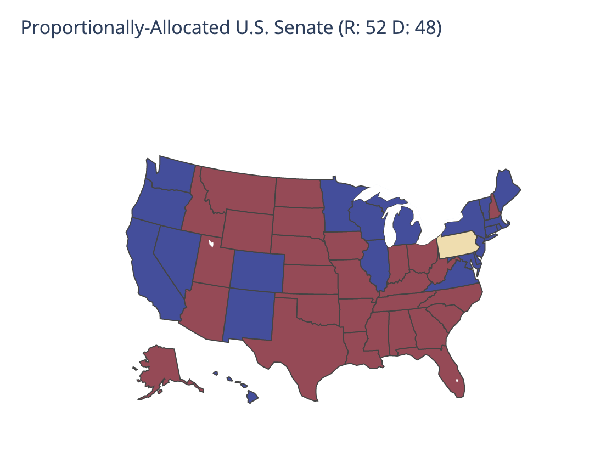

What I found - Why it's useful.
Abstract
Introduction
Throughout history, as the American public has experienced firsthand the consequences of rigid and unbending institutions, Congressional gridlock, and undemocratic policies, it has consequently looked to reform fundamental aspects of the American system of governance. From the ratification of the Seventeenth Amendment, which brought about the direct election of Senators, to the ratification of the Fifteenth, Nineteenth, and Twenty-Sixth Amendments, which all expanded suffrage, to the recent push to abolish the Electoral College through the National Popular Vote Interstate Compact, U.S. citizens and politicians alike have urged bold action in the face of institutional obstacles.
Recently, the ire of the public has been directed at the Senate, one half of what was thought of by the Framers of the Constitution to be the primary branch of the federal government. Many modern criticisms of the Senate have stemmed from its propensity to promote the voices of less-populated states relative to those of more-populated states. This is illustrated by the fact that Wyoming, with 578,000 citizens, is 69 times less populous than California, with 39,866,000 citizens, yet both states each have two seats in the U.S. Senate. As a result, the average Wyomingite has, in theory, 69 times more political capital than the average Californian.
In the wake of the increased scrutiny on the Senate, calls to reform it have intensified. As recently as January 2019, Eric Orts, a legal studies professor at the University of Pennsylvania, published an article outlining one such reform: a rebalancing of Senate seats to reduce disparities in vote power.
Granted, the dissolution of equal representation in the Senate is not something that the Framers condoned, let alone envisioned. In fact, part of Article V of the Constitution reads, “...no State, without its Consent, shall be deprived of its equal Suffrage in the Senate,” . In essence, the Constitution established equal Senate apportionment as a bedrock principle of the American legislature, and ensured that this principle could not easily be tampered with.
While the constitutionality of eliminating equal representation of states in the Senate may still be unclear, it is nevertheless beneficial to imagine a constitutional system in which the Senate more closely represents the democratic nature of Congress’ lower chamber, if only as an exercise in the democratic allocation of seats in a legislature. To this end, I have attempted to design an algorithm that will redistribute the existing 100 Senate seats more equitably among the 50 states. In doing so, I abided by the following two rules:
- No state may be left without Senate representation.
- Secondly, the primary objective of this exercise is to decrease the disparities in the political power of citizens of each state by minimizing the senator-to-consituent ratio across the states.
This article summarizes the data and methods I used to allocate Senate seats and comments on the effectiveness and practical considerations of doing so. Furthermore, as one of the first articles for the Berkeley Political Review to focus primarily on political data science and political modeling, this article will also serve as an introduction to and guidepost for the power of data-driven journalism from the Berkeley Political Review.
Exploratory Data Analysis
INTRODUCTION
import numpy as np
import pandas as pd
from matplotlib import pyplot as plt
state_pop = pd.read_csv("US_State_Population_Data.csv")
state_pop
Out:
| State | Population (2018) | U.S. House Seats | |
| 0 | AL | 4887871 | 7 |
| 1 | AK | 737438 | 1 |
| 2 | AZ | 7171646 | 9 |
| 3 | AR | 3013825 | 4 |
| 4 | CA | 39557045 | 53 |
| ... | ... | ... | ... |
As a starting point, I used only the following three data points for each state:
- Its population
- The number of House seats it has
- The number of Senate seats it has (always 2)
From here, I calculated other important measures, one of which is the Population per Senator metric, which is simply the total population of a state divided by the number of Senate seats it has. This metric is useful in examining the disparity in Senate representation, as Population per Senator can be inferred to also measure the (theoretical) influence that any one citizen can have on Senate policy. The distribution of Population per Senator is visualized in the histogram below.
The obvious outliers, which lie on the right side of the graph, are the four most populous states in the Union: California, Texas, Florida, and New York. These are the states where any individual vote in a Senate race matters the least, as can be seen in the map below.
The map shown above is really the crux of this issue of proportional representation in the Senate. Thus, my primary aim in re-allocating Senate seats was to prevent the disparities seen in the above map and make the Population per Senator metric as uniform as possible across all states. The next section deals with how I went about tackling this Senate representation optimization problem without having to a) increase the total number of seats in the Senate, or b) deny any state at least some representation in the Senate.
Senate Allocation Model
Senate Seat Allocation
The method I developed to create a more ‘equitable’ Senate allocates seats under the principle that each state should get seats in proportion to its population. It accomplishes this task by first setting a desired ratio for Population per Senator based on the national population and then allocating seats to states whose population exceeds that ratio. The desired ratio is simply the U.S. population (326,464,979 people according to our 2018 data) divided by the total number of Senate seats (100), giving a ratio of 3.26 million people per senator.
This method has the advantage of leveling the representative capacity of each Senate seat on the national level, leading to less variation of Population per Senator on the state level. That is to say that this method allows us to say “one Senate seat represents roughly 3.3 million Americans,” regardless of which state we’re referring to.
The result of this proportional allocation algorithm are pictured in the state maps below. The first shows the number of Senate seats per state under the proportional allocation system while the second shows the change in Senate seats from the current Senate to the hypothetical proportionally-allocated Senate.

The allocation method described above led to a 40% decrease in the variability of the Population per Senator metric across all fifty states–this had the effect of ‘balancing’ Senate seats more even across states according to their populations. The effect of the new proportionally-allocated Senate is perhaps best summarized by the graph below. It shows a far more equitable distribution of Senate seats compared to a similar graph of the current Senate (see “Exploratory Data Analysis” section).
IMAGE
def senate_allocation_method(senate_data):
states = senate_data.copy()
us_pop = states['Population (2018)'].sum()
senators = 100
std_ratio = np.round(us_pop/senators)
#Give all states at least 1 senator
states['Senators'] += 1
states['Rem_Pop'] = states['Rem_Pop'].apply(lambda x: max(x - std_ratio, 0))
senators = senators - 50
rounds = 1
flag = False
num_eligible_states = states[states['Rem_Pop'] >= std_ratio]['Rem_Pop'].count()
while (num_eligible_states > 0):
states.loc[states['Rem_Pop'] >= std_ratio, 'Senators'] += 1
states.loc[states['Rem_Pop'] >= std_ratio, 'Rem_Pop'] = states.loc[states['Rem_Pop'] >= std_ratio, 'Rem_Pop'] - std_ratio
senators = senators - num_eligible_states
num_eligible_states = states[states['Rem_Pop'] >= std_ratio]['Rem_Pop'].count()
#print(senators)
#print(num_eligible_states)
#print("--")
rounds += 1
print('Remaining Senators: ' + str(senators))
print('Remaining Eligible States: ' + str(num_eligible_states))
unrep_pop = states['Rem_Pop'].sum()
print(unrep_pop)
return states
The Mathematical Model
In mathematical terms, the number of Senate seats for any one state can be calculated as:
Where:
- S – Number of Senate seats for state A
- ps – Population of state A
- pn – National Population (326,464,979)
With one additional Senate seat each allocated to:
- New York
- Pennsylvania
- Illinois
- Missouri
FOOTNOTE
Tests
The Hypothetical Proportionally-Allocated Senate
As expected, the result of allocating senators according to population–and not on an equal basis as described in the Constitution–is that political capital (the power of any one citizen to influence national policy) is more or less standardized across the country. While this method is far from perfect, this algorithm represents a step in the right direction towards the democratization of the Senate. As such, much of the work in this article will build off of the map generated in the first part of this project.
Of course, no analysis of the “politics” of Senate proportional representation would be complete without discussion of what any re-alignment of Senate seats would mean for the partisan composition of the Senate. The final part of this project deals with how current partisan leans in each state might apply to a Senate where not every state has two senators.
In doing so, one major obstacle arises: how exactly do you simulate a statewide election, especially if you have no prior evidence to suggest how any state might vote with its updated number of Senate seats?
Imputing the Partisan Composition of the Senate
As before, I started with a few ground rules and guidelines:
- This is going to be a very rudimentary election forecaster. This project is mainly about how to apportion Senate seats, so my focus is not on creating a very advanced election model. (If you're looking for a cutting edge election model, check out FiveThirtyEight’s Election Forecaster or The New York Times’ Upshot Section)
- I want my model to do well in simulating the outcomes of elections in the current Senate (which we can compare to the actual election results) so that I can apply it to other Senate maps with reasonable confidence in its predictive power.
- I also want this model to work with as little input data as possible. Consequently, I am just going to use the state’s Cook Political Report Partisan Voting Index (see more here) and some nationwide election parameters in order to generate an outcome.
- This model will assume that voters will vote for parties–the personal or political qualities of individual candidates won’t matter.
These guidelines lead to the creation of the following mathematical model for simulating a Senate election:
The Process
After experimenting with a variety of methods, including methods involving either a strictly-mathematical formula or computer-generated randomness, the following election formula was chosen for its simplicity and ability to accurately simulate election results:
- For each state, elections are held one after another until all available senators have been elected.
- The number of voters in an election is defined as the population of the state multiplied by the percentage of voting age citizens (77%) then multiplied again by the turnout of the election (always 56%).
- 1 - s % of the voters are considered ‘base’ voters for either party, where s is the percent of swing voters in the election (10% of the total number of voters)
- The number of base voters is multiplied by the Democratic lean of the state to determine the number of Democratic base voters. The same is done for Republican base voters.
- The swing vote is decided by multiplying the number of swing voters (10% of the total number of voters) multiplied by the percentage margin of the previous Senate election.
- The the Democratic swing votes are added to the Democratic base votes (and vice versa). The party with the greater number of votes in the election wins that Senate seat.
In short, this algorithm uses the state’s population, partisan lean, and the outcome of past simulated Senate elections in order to determine how the state might vote in the current election.
The Outcomes
With a very rudimentary election forecaster assembled, I was ready to apply my algorithm the various Senate maps, both real-world and hypothetical. As a baseline, I simulated the results of Senate elections given the current equal representation system. My hope was that my model would generate a somewhat accurate map of the Senate’s partisan composition (as pictured below).
Of course, that was not the case. The map below shows the election model applied to the current (even) allocation of Senate seats. From a subjective standard, the model is clearly off (missing some key insight) about certain states and how they would vote, such as Alabama, Arizona, Montana, Ohio, and West Virginia.
Part of this error is understandable given both the political nuances of Senate elections and the data used for the simulation, which captured a state’s partisan lean with respect to presidential elections, not Senate elections. For example, the model can be easily forgiven for underestimating the strength of the Democratic party in Montana and West Virginia, which vote overwhelmingly Republican in presidential elections but nevertheless have a strong ancestral Democratic base, and Alabama, where the election of Democrat Doug Jones can be considered an extreme outlier in purely political terms. Regardless, the model is notably reluctant to split a state’s Senate seats among both parties–this is largely a result of the model’s simplicity (this aspect of the model in particular merits further research and development). However, it must be said that on the whole, the model does a fairly good job of simulating the partisan composition of the Senate at large–there was only a 5% difference between the model’s Senate composition prediction and the real-life Senate composition. With this reassurance, I was ready to apply this election model to the Senate map I generated to bring proportional representation to the Senate. The outcome of the simulated election process with the proportionally-allocated Senate map I generated in Part 1 of this project is pictured below.
As an initial hypothesis, one might anticipate that making the Senate more proportional would tilt the balance towards the Democrats in the Senate. After all, the allocation of seats is supposed to mirror that of the House of Representatives, so one might expect that the partisan composition would mirror that of the House, too (i.e. a clear Democratic majority). However, the above map shows that that was simply not the case. As a result of trying to extrapolate hypothetical statewide elections from recent statewide polling data, the model simply applies each state’s partisan lean to that state’s new allocation of Senate seats. And on the whole, there was little change between this new map and the election model of the current senate (above), or the actual partisan composition of the Senate as it is currently constituted, for that matter.
Not fully satisfied with this status-quo conclusion, I made a variation of the election model that was intentionally more bullish on ‘splitting the ticket,’ While the result of this model is purely speculative (even more so that the original election model), its predictions offer an insight into the political dynamics of a non-evenly-allocated Senate.
A More Diverse Senate Map
ALT MAP
This more colorful map is a more complete indication of how a proportionally-representative Senate might encourage diverse bipartisan election results. In particular, this map makes clear that more moderate states might tend to split their Senate seats when given more than two senators to elect. Florida, Pennsylvania, Arizona, and Virginia offer examples of this effect. It should again be noted that this simulation strays from reality on some states more so than others. Massachusetts, Washington, and Tennessee all have an even number of Democratic and Republican senators under this simulation, although the current political climate in each of those states might suggest those results are next to impossible.
Nevertheless, this map (more so than the previous hypothetical election map) illustrates nicely the primary effect of giving populous states more than two senators. Namely, as the number of Senate seats increases in a state, it increases the likelihood that the state will elect a senator from the opposite party as its political majority. And without the political gerrymandering inherent in House districts, multiple statewide Senate elections will give citizens of the state’s minority party the opportunity to successfully send one of their own candidates to Washington. California and Texas provide two clear examples of this, with California electing mostly Democrats but also a fair number of Republican senators (and vice versa for Texas). This appears to a lesser extent in other states such as Georgia, North Carolina, New York, and Michigan.
Conclusions
Despite the fact that the models built as part of this project seem to simply support the current Senate status quo—that the Senate will be split almost evenly among the two mainline parties, with a narrow edge to Senate Republicans—, the outcomes of this project illustrate an important point about the politics of making the Senate more democratic. Namely, a proportional Senate is not nearly as disruptive to the current state of American politics than many might think. These results may perhaps prove persuasive in arguing that the American political establishment should support a big structural change in such a quintessential American institution. After all, these maps show that the reallocation of Senate seats does little to damage the strong support of for Republicans in the Senate. Indeed in the long run, democracy may be both the politically- as well as the theoretically-appropriate course of action.
Once again, thank you for taking the time to read this article. I hope you enjoyed both the content of this project as well as our new focus on providing interactive data visualizations to accompany the great journalism and political critique we do here at the Berkeley Political Review. If you have any in-depth questions about this project, you can email me at jweichert@berkeley.edu.
Notes and References
The code and more visualizations for this project can be found here [INSERT LINK HERE]
While researching for this project, I came across numerous other projects tackling issues of election simulation, legislature apportionment, and political data science. Below are some that I think are worth visiting:
- To Build a Better Ballot - Nicky Case
- FiveThirtyEight's 2018 Senate Elections Forecaster
- The New York Times' Senate Model LEO
About
Motivation. Previous Experience. Tie-Ins to PS 1. Other Projects. Portfolio